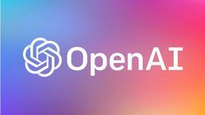
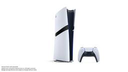

テクノエッジ TechnoEdge
https://www.techno-edge.net/
テックメディア TechnoEdge (テクノエッジ)公式サイトです。サイエンスから最新ガジェット、サービスやコンテンツまで、最前線のニュースとレビュー、コラムをお届けします。
フィード

アップル、macOSの「フルディスクアクセス」制御を強化へ。AIエージェントのリスク増大を警告 1
1
テクノエッジ TechnoEdge
アップルは、macOSの「フルディスクアクセス」に関する設定に追加の制御機能を導入する方針を明らかにしました。
11時間前

Claude Codeが拡張機能「mod」対応、UIや動作をカスタマイズ。Claude書かせて作成も 24
テクノエッジ TechnoEdge
Anthropicが、AIコーディングツール「Claude Code」の外観や動作をユーザーの好みで拡張できる新機能「mod」を公開しました。
1日前

Qwen3.8-27Bの精度98%を維持しつつ9倍小型化しiPhoneでも動く「Bonsai-2-27B」など生成AI技術5つを解説（生成AIウィークリー） 27
テクノエッジ TechnoEdge
「生成AIウィークリー」（第161回）は、高度な画像編集ができるオープンウェイトな画像生成AI「Qwen-Image-2.1」や、XiaomiのオープンソースAIモデル「MiMo-V2.6」を取り上げます。
1日前

スマホがなくてもAIが使える「AI-eSIM」 スマートグラスやペットロボットを変える新たな仕組みとは (山根康宏) 3
テクノエッジ TechnoEdge
AI-eSIMは端末認証とクラウドAIを一体化し、スマートグラス等のAIデバイスを単体接続・活用可能にする小型チップで、AI-IoT普及を加速する。
2日前

約1kgで16.5時間駆動の13.3型レッツノート「NC7」、直販限定で個人向け販売 33万1100円から 1
テクノエッジ TechnoEdge
パナソニック コネクトは、レッツノートの13.3型モデル「NC7」を個人向けに11月18日から発売します。価格は33万1100円（税込）から。
2日前

100年前の歌もAI超解像できる？ 東京大学猿渡研「Sidon」で始めるAI歌声超解像（CloseBox） 15
テクノエッジ TechnoEdge
生成AI技術を使って、古い写真を高精細にすることはできています。動画にすることすらできます。でも、音は？ それを可能にする技術が、ある程度可能になったというお話です。
2日前
PS5 Proじゃなくても画質向上、ソニーの新AI超解像『QSSR』 ウルヴァリンとヨウテイから提供。既存ゲームもアップデートで対応可
テクノエッジ TechnoEdge
ソニーがPS5向けの新しいグラフィック技術 QSSR を発表しました。
2日前

新Kindle 計6モデル発売 頁めくりリモコンKindle Click、物理ボタンつきカバーも 106
テクノエッジ TechnoEdge
Amazonが電子書籍リーダーKindleのラインナップを更新しました。
2日前

Google、新フロンティアモデルGemini 4 Argon発表 出力100万トークンで長期の自律推論に強み、法務や業務自動化でOpus 5.5やAstraに大差 16
テクノエッジ TechnoEdge
Google が新たなフロンティアAIモデル Gemini 4 Argon を発表しました。
3日前
Googleが回る変態キーボード「Gboardくるくるバージョン」開発、オープンソース化 (4月1日ではありません) 1
テクノエッジ TechnoEdge
早いもので、今年もまたGoogleが出オチ的「新しい日本語入力方法のご提案」をする季節になりました。
3日前

Amazon 新 Fire TV Stick 4K発売 電源アダプタ不要のスリム設計で高速化、新デザインの改良型リモコンも 12
テクノエッジ TechnoEdge
Amazonは9月30日、ストリーミングメディアプレーヤーの新モデル「Fire TV Stick 4K」を発売しました。価格は11,980円（税込)。
3日前
OpenAIのAIエージェント「dots」提供開始 専用クラウドPCで4000超アプリと連携、GPT-6 Astraで24時間動作 1
テクノエッジ TechnoEdge
OpenAIは米国時間9月29日、開発者向けイベント「DevDay 2026」で、AIエージェント「dots」を発表しました。
3日前

新種の“判断だけAI”が無料で使える「Laya」がオープンソースで登場。Jevの約7.8倍高速（生成AIクローズアップ） 17
テクノエッジ TechnoEdge
今回は、文章を生成せず判断だけする、オープンソースの意思決定AIモデル「Laya」を取り上げます。インドのAI企業Convai Innovationsが開発しました。
4日前

OpenAIがオーストラリアに謝罪。豪政府サイト不正アクセス問題を「深くお詫び」
テクノエッジ TechnoEdge
OpenAIは現地時間10月中旬、同社のAIエージェントがオーストラリア政府の複数の公共サービスサイトに無断でアクセスしていたことことについて、公式ブログで謝罪を発表しました。
4日前

ソニーストアでPS5 Pro抽選販売の受付開始 「過去2年で60時間以上プレイ」「日本在住」など条件あり
テクノエッジ TechnoEdge
ソニーが PlayStation 5 Pro（CFI-7100B01）のソニーストア購入申し込み受付を開始しました。
4日前

生成AIグラビア実践ワークショップ、次回は「9月に登場した生成AI画像系、Qwen-Image 2.1とMing Image」をテーマに9月30日開催。テクノエッジ アルファ会員なら全過去回含め無料視聴できます
テクノエッジ TechnoEdge
テクノエッジ編集部では、生成AIグラビア実践ワークショップ第4期第7回を9月30日に開催します。今回は、「9月に登場した生成AI画像系2つ」をテーマに、デモを交えて解説します。
5日前
Claude Sonnet 5.5提供開始 Opusに迫る性能で先代比最大3割安・3割高速、GPT Solに知識労働で大差 1
テクノエッジ TechnoEdge
Anthropicは米国時間9月28日、AIモデル「Claude Sonnet 5.5」の提供を開始しました。9月22日に登場したOpus 5.5に続く「Claude 5.5」ファミリーの2番目のモデルで、Claudeの各アプリとAPIのほか、Amazon Web Services、Google Cloud、Microsoft Azureでも利用できます。
5日前

NVIDIA、AIエージェントをテスト環境に留まらせる「Open Agent Safety Platform」発表 1
テクノエッジ TechnoEdge
NVIDIAは、このところ報告が相次いでいる、AI企業の制御から逸脱したAIエージェントが他所のウェブサイトなどに侵入し粗相をおかしてしまう事案を防止するためのセキュリティレイヤーとなる「Open Agent Safety Platform」を発表しました。
5日前
フロリダ州司法長官、OpenAIへの新AIモデル開発一時停止命令を裁判所に申請 1
テクノエッジ TechnoEdge
フロリダ州のェームズ・ウスマイヤー司法長官は、独立した安全監視体制が整うまでOpenAIによる新モデルの開発を禁止すること、および未成年者をChatGPTから遮断することを州裁判所に申請しました。
5日前

話しかけて6秒で、彼女が口を動かして返事する。LTX-2.5高速化技術で、動画生成リップシンクアバターがようやく「会話」になった（CloseBox） 7
テクノエッジ TechnoEdge
13年前に他界した妻と対話するシステムについて、何度かこの連載で取り上げてきました。
5日前

Claude Codeがもうひと踏ん張りする新機能、5時間制限に達してもキリの良いところまで継続 21
テクノエッジ TechnoEdge
Anthropic が Claude サブスクユーザー向けに「キリの良いところまで続ける」新機能を追加しました。
6日前
ベルキンの定番が突然変異、モーションセンサーライト搭載モバイルバッテリー発売。Watch充電は非対応 2
テクノエッジ TechnoEdge
ベルキン株式会社は、周囲の動きを感知して自動点灯するLEDモーションセンサーライトを搭載したモバイルバッテリー「BoostCharge Pro モーションセンサーライト搭載 モバイルバッテリー 10,000mAh」（型番:BPD019）を、2026年9月25日に発売しました。
6日前
悪魔城ドラキュラ40周年でファミコン版スマホアプリ無料配布、過去作セール実施 10月は新作『Castlevania: Belmont's Curse』 1
テクノエッジ TechnoEdge
コナミデジタルエンタテインメントは9月25日、「悪魔城ドラキュラ」シリーズ40周年の記念施策を公式ポータルサイトで発表しました。40周年記念の一環として、シリーズ第一作のファミコン版が遊べるスマホアプリを期間限定で無料配布します。
6日前
『マインクラフト』に初の追加ディメンション、「The Sift」発表、2027年提供へ
テクノエッジ TechnoEdge
サンドボックスゲーム『Minecraft（マインクラフト）』に、2011年の正式リリース以来、初めてとなる追加ディメンション「The Sift」が発表されました。
6日前

指輪型AIデバイス『Vocci』国内発売 会議や口述をMCP共有、ChatGPTやClaudeのコンテキスト化
テクノエッジ TechnoEdge
指輪型AIレコーダーのVocci が国内向けクラファンを実施します。
8日前
生成AIグラビアをグラビアカメラマンが作るとどうなる？第75回：Qwen-Image 2.1は商用利用に制限あり、Ming ImageはUI/UX特化だがリアル人物OKで自由度高くて期待大（西川和久）
テクノエッジ TechnoEdge
9月に登場した生成AI画像系2つ。Qwen-Image 2.1は高性能だが商用利用に制限あり。Ming ImageはUI/UX特化だがリアル人物OK。しかも無検閲なのだ。
9日前
OpenAIのエージェントが豪州政府サイトに不正侵入。首相が抗議「法的措置とる」と述べる
テクノエッジ TechnoEdge
オーストラリアのアンソニー・アルバニージー首相は、国連総会出席のために訪れたニューヨークで記者会見を開き、OpenAIのAIエージェントがオーストラリア政府の医療統計ポータルに不正アクセスしていたことを明らかにしました。
9日前
Meta「たまごっち」風AIデバイス「Muse Charm」発表。12月出荷予定、詳細は後日発表
テクノエッジ TechnoEdge
MetaはAIアシスタント「Muse」を搭載した小型ハンドヘルドデバイス「Muse Charm」を発表しました。マーク・ザッカーバーグCEO自らが壇上でデモを披露し、スマートグラスを装着しない人がMuseと会話するための手段になるとしています。
9日前
Metaが3D映画やスポーツ配信を大幅拡充、Questにも一部提供。SWやMCU作品を新たな没入フォーマットで提供、VRグラスはIMAX Enhanced認証取得
テクノエッジ TechnoEdge
「Meta Connect 2026」イベントより。Metaはメガネ型のVRデバイス「Meta VR Glasses」とあわせて、3D映画を軸にした映像コンテンツの拡充策を発表しました。
9日前
定番マイクYETIに17年ぶり後継「YETI 2」 近接センサで指向性まで自動調整、Logi Gブランドでゲーミングやクリエーター向け
テクノエッジ TechnoEdge
ロジクールは、ロジクールGブランドのUSBマイク「YETI 2 アダプティブマルチパターン USB マイク」を10月15日に発売します。カラーはブラックとホワイトの2色で、ロジクールオンラインストア価格は2万8930円（税込）です。
9日前
カメラなしのレイバンMeta Audioグラス・LISAコラボ・新型Gen 3などAIグラス多数発表、4万2680円から
テクノエッジ TechnoEdge
MetaとEssilorLuxotticaは9月24日（日本時間）、年次イベント「Connect 2026」でAIグラスの新製品「Ray-Ban Meta Audio」と「Ray-Ban Meta (Gen 3)」を発表しました。Gen 3は同日から日本でも販売を開始し、Audioの日本展開は2027年を予定しています。
9日前
最高水準の動画生成AI「MiniMax H3」高速化を40日で極めた。本命「H3 Max」のウェイト公開はもう不要なのか？（CloseBox）
テクノエッジ TechnoEdge
現時点で最高水準と言われ、商用サービスSeedance 2.5に匹敵するとも言われている動画生成AI「MiniMax H3」。その高速化への道のりを記事にしました。
9日前
Meta VRグラス発表。メガネ部100gで5K OLED画面とアイトラ対応、Questアプリ互換 IMAX認証で3D映画やスポーツコンテンツも大量投入
テクノエッジ TechnoEdge
「Meta Connect 2026」イベントで、Metaがメガネ型のVRデバイス「Meta VR Glasses」を発表しました。発売は2027年春、価格は1299.99ドル。日本でも販売します。
10日前
YouTube「カスタムフィード」を複数作成してタブ化、ホーム画面に保存する新機能を米国で導入へ
テクノエッジ TechnoEdge
YouTubeは、Geminiの技術を用いた新しいホーム画面を今秋より米国で導入します。カスタムフィードと呼ばれるこの機能は水曜日の「Made on YouTube」イベントで発表されましたが、今年5月に発表された同名の機能を発展させたものとなります。
10日前
Inno3D子会社、アロマテラピー機能搭載のRTX 5070グラフィックカードを限定発売
テクノエッジ TechnoEdge
香港のPCグラフィックボードベンダーであるAX Gamingは「アロマテラピー」機能を内蔵したグラフィックカード「GeForce RTX 5070 12G Autumn Limited Edition」を発表しました。同社は今年、季節ごとに特色グラフィックカードを限定発売しており、これはその第3弾となります。
10日前
Claude Opus 5.5発表、Astra超え・Fable 5.1級で半額以下。口調も結論から分かりやすく改善、無料リセット配布
テクノエッジ TechnoEdge
Anthropicは米国時間9月22日、AIモデル「Claude Opus 5.5」の提供を開始しました。新たな「Claude 5.5」ファミリーの最初のモデルで、同社の各サービスとAPIのほか、Amazon Web Services、Google Cloud、Microsoft Azureでも利用できます。
10日前
XBOX、開発スタジオ再編で268人追加削減。『Halo』新作はActivisionが開発、Ninja Theoryは閉鎖濃厚
テクノエッジ TechnoEdge
マイクロソフトのXBOX部門エグゼクティブバイスプレジデント兼チーフコンテンツオフィサーのマット・ブーティ氏が、新たに268人の人員削減と、複数のファーストパーティスタジオの再編を発表しました。
11日前
約4.5万円の高級コントローラはどこが違う？ SteelSeries Aeon Pro発売、PC / Xbox / モバイル共用でカスタマイズ対応
テクノエッジ TechnoEdge
SteelSeriesは、Xbox・PC対応の新型ワイヤレスゲーミングコントローラー「SteelSeries Aeon Pro」を発表しました。
11日前
Googlebook 計5機種が発売、Acer・ASUS・HP・デル・レノボ製 Gemini統合のGooglebook OS搭載
テクノエッジ TechnoEdge
Acer、ASUS、Dell、HP、Lenovoの5社が、GeminiをOSに統合した新たなノートPC「Googlebook」の予約受付を開始しました。米国では10月4日、カナダ、英国、アイルランド、フランス、ドイツ、オーストラリアでは10月5日に店頭販売を開始します。
11日前
米Amazon、MetaのAIエージェント「Muse」による買い物代行をブロック。プライバシーとセキュリティを懸念
テクノエッジ TechnoEdge
米Amazonは、Metaが2025年9月8日に公開したパーソナルAIエージェント「Muse」によるAmazon.comへのアクセスを遮断しました。
12日前
ひょっとしてローカル最速？ 「詳細記述スパース」でMiniMax H3前人未到の3ステップ超えできちゃったかも（CloseBox）
テクノエッジ TechnoEdge
AI動画がさらに最大で1.5倍速くなりました。MiniMax H3の現在最速である3ステップの上に「スパースアテンション」を重ねることで。
12日前
生成AIグラビアをグラビアカメラマンが作るとどうなる？第74回：MiniMax H3高速化、15枚参照ほか多彩なテクニックを紹介（西川和久）
テクノエッジ TechnoEdge
MiniMax H3高速化の基本4つを紹介しよう。
13日前
Sunoに匹敵する音楽生成AI「YuE2」、膨大な論文から“まだ誰も知らない科学的関係”を予測するソニー製AI「Hakken」など生成AI技術5つを解説（生成AIウィークリー）
テクノエッジ TechnoEdge
「生成AIウィークリー」（第160回）は、Suno v5／v6に匹敵する音楽生成AI「YuE2」や、過去の論文から未来の発見を予測するAI「Hakken」を取り上げます。
14日前
台風で東京ゲームショウ2026最終日が開催中止 21日(月)分は払い戻し・企画はオンライン配信調整、史上初の5日間開催ならず
テクノエッジ TechnoEdge
幕張メッセで開催中の東京ゲームショウ2026を運営するCESAが、5日目にあたる9月21日(月)の開催中止を発表しました。
14日前
ハエの脳を楽器にした。十数万個のニューロンで無限に音楽を奏でる「Music on the Fly」を作った（CloseBox）
テクノエッジ TechnoEdge
次は何を無限にしようか。そう考えていたら、人間の作曲家ではなく、ハエの脳に行き着いてしまいました。
16日前
GPT-6 Astra使い『Minecraft』内で『CoD:BO2』人気マップをネイティブ動作させた動画、AIコーダーが公開
テクノエッジ TechnoEdge
「AIを活用したゲーム開発」を志す開発者Luckey Faraday氏はFPSゲーム『Call of Duty : Black Ops 2』の「Hijacked」マップを人気サンドボックスゲーム『マインクラフト』内でネイティブ動作させることに成功したと述べ、Xに動画とともに投稿しました。
16日前
「Claude Cowork」がClaudeチャットに統合、ドキュメント・スライド作成も可能に
テクノエッジ TechnoEdge
Anthropicは、AIアシスタント「Claude」のエージェント型作業環境「Cowork」をデフォルトのチャットに統合、一本化すると発表しました。これにより、ユーザーはリクエストをチャットに投げるか、エージェント型ワークスペースで処理するかの判断をする必要がなくなります。
17日前
ソニー、平面駆動の新型PS5ヘッドセットPlayStation Pulse / Pulse Edge発表。TGSで披露
テクノエッジ TechnoEdge
ソニー・インタラクティブエンタテインメント（SIE）は9月16日、PS5向けワイヤレスヘッドセットの新モデル「PlayStation PULSE ワイヤレスヘッドセット」と、より上位に位置づけられる「PULSE Edge ワイヤレスヘッドセット」を発表しました。
17日前
「優秀な人のAIの設定・やり取り」をチーム全員で自動共有できる無料ツール「TeamAI」が商用利用可で登場（生成AIクローズアップ）
テクノエッジ TechnoEdge
今回は、AIの設定や活用ノウハウなどをチーム全員で自動共有できるテンセント開発のオープンソースツール「TeamAI」（teamai-cli）を取り上げます。
17日前
3つ折りスマホ「Huawei Mate XT 2 Ultimate Design」実機ハンズオン、サムスンGalaxy Z TriFoldと比較 G型で新時代到来
テクノエッジ TechnoEdge
ファーウェイのMate XT 2は新たにサムスンGalaxy Z TriFoldと同じG型三折りで構造で、開時10.2/閉時6.5インチディスプレイを搭載。高性能なカメラも搭載している。
17日前